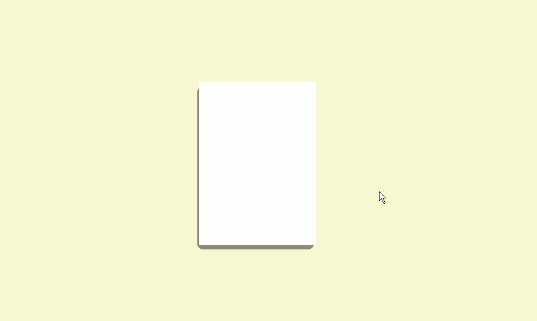
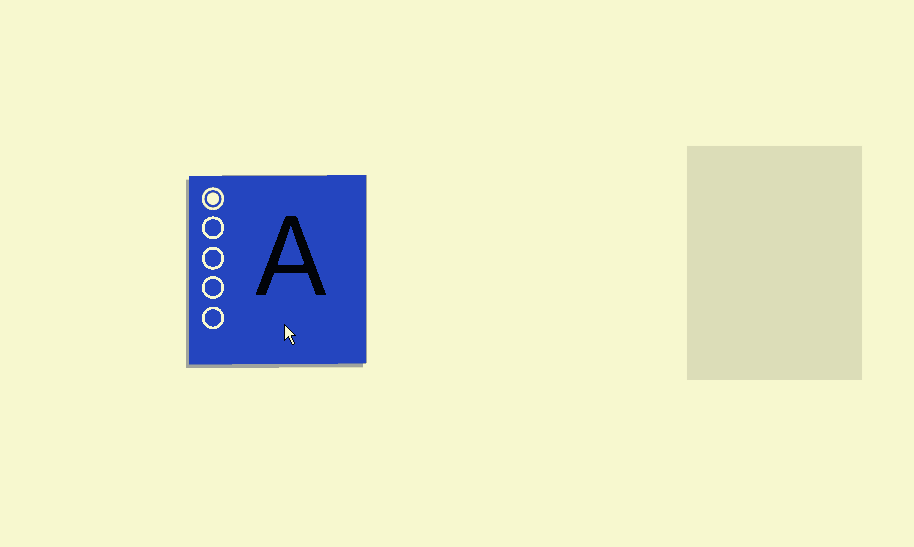
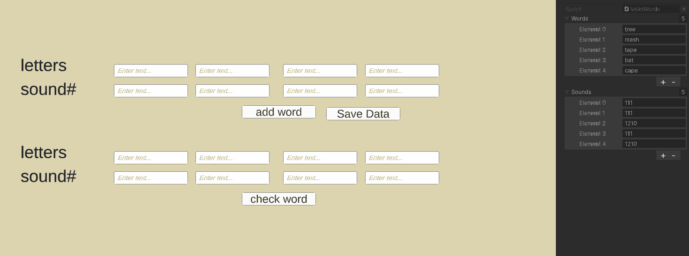
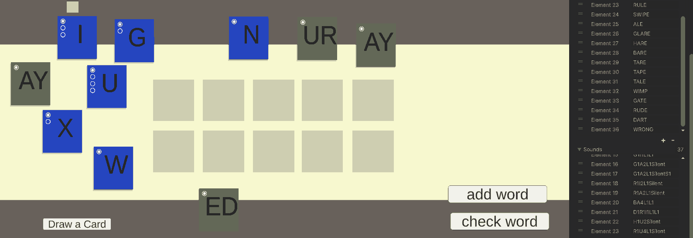

Educaional Phonics Card Game Dev Log 2: Creating the Cards
23/03/2026
The project so far:
Over the past few months, the project has made large progress. This development log will discuss the creation of the card system, the phonics specific mechanics created so far, and the next steps for the project.
The Card System:
I took it upon myself to make the card system from scratch within unity. The basic functionality of the card works in 2 parts: the cards themselves and the raycast mouse. The cards themselves are planes within 3D world space. These cards are moved around and interacted by the raycast mouse system, which converts screen cursor position to world position in order to correctly interact with the cards and move them around the screen. Despite being rendered in 3d space it is supposed to look 2D as such it is rendered with an orthographic camera, and all models will use unit materials. Additionally, each card has a raycast downwards to detect card slots which allow us to place cards and have them snap to a grid.
To make the cards' movement feel better, a slight delay is added to movement, with the card movement speed slower than that of the cursor and multiplied by the distance to the cursor. This results in cards that slow down as they reach the cursor. A tilting effect was also added to the card by editing the rotation of the card plane to ‘look at’ an empty above the cursor’s world space position. A simple shadow was also added to the cards by using a second plane with a dark semi-transparent material to act as a physical shadow that is moved between 2 positions depending on if the card is currently being held. These added visual effects have added a lot in terms of game feel and visual complexity at such an early point in the project.

This gif Showcases the basic card behavior, the camera behavior and the card snapping to a card slot.
The design of the phonics card has not been altered too drastically from the mockup seen in Dev Log 1. The most drastic change has been the addition of a 6th pip that was required for the ‘ough’ phonic as it is the only one with 6 sounds. These pips are created by planes stacked on top of the main card plane.

Card Data :
To avoid having over a hundred different card prefabs, one for each phonic, I found it necessary to make a more sustainable and robust solution. This was my first time using scriptable objects instead of just monobehvior scripts. The phonics card data contains a string of the phonic which is used to display on the card, a second string that is used for behind the scenes phonetical checking for later in the project, the material to be used on the main card plane. An array of sound clips is also used, and this holds all of the audio that the card needs, each audio clip being one of the sounds that phonic can make. The length of the sound clip array is used to find the number of sounds that the phonic can make; this is used on the card to decide how many pips are active/ inactive.
Using The Card Data:
To use the card data is pretty simple: the card object will need the
phonicsCardBeh script where it will take the card data and apply it to the card on start. The phonic specific card behavior is sperate to the main card behavior script because I'm also using the card system in another project. This card data can also be accessed by special ‘card slots’ so the phonic letters and play audio clip (not yet implemented). In gameplay, players can double click on a card to change the active sound. The phonic cards' active sound is indicated by which pip is selected. If no pips are selected, then the card is silent.
This is the
PhonicsCardData script,
using System.Collections;
using System.Collections.Generic;
using UnityEngine;
[CreateAssetMenu(menuName = "Phonics Card Data")]
public class PhonicsCardData : ScriptableObject
{
//[field: SerializeField] public Sprite Sprite {get; private set; }
[field: SerializeField] public string PhonicsLetters {get; private set; }
[field: SerializeField] public string[] PhoneticSpelling{get; private set; }
//[field: SerializeField] public int NumberOfSounds {get; private set; }
[field: SerializeField] public AudioClip[] AudioClips;
[field: SerializeField] public Material cardMaterial;
}
And this snippet from
PhonicsCardBeh
public void SetUpCard()
{
if(myCardData != null)
{
//assemble card
myRend.material = myCardData.cardMaterial;
myTMP.text = myCardData.PhonicsLetters;
numbOfSounds = myCardData.AudioClips.Length ;
myNumbTMP.text = numbOfSounds.ToString();
//Debug.Log(numbOfSounds);
// set up pip planes
foreach (Renderer rend in pipPlanes)
{
//rend.Material
}
//if(numbOfSounds >= 1) pipPlanes[0].enabled = true;
if(numbOfSounds >= 3) pipPlanes[1].enabled = true; else pipPlanes[1].enabled = false;
if(numbOfSounds >= 4) pipPlanes[2].enabled = true; else pipPlanes[2].enabled = false;
if(numbOfSounds >= 5) pipPlanes[3].enabled = true; else pipPlanes[3].enabled = false;
if(numbOfSounds >= 6) pipPlanes[4].enabled = true; else pipPlanes[4].enabled = false;
if(numbOfSounds >= 7) pipPlanes[5].enabled = true; else pipPlanes[5].enabled = false;
//set current sound
currentsound = 1;
pipPlanes[0].material = PipEnabled;
}
}
Making words:
The word manager:
For both the word maker and game sides experiences of the project I need a system that will read the card data of several phonics cards for a word as an output. the first version of this system didn't use the cads at all as it was built soly to text the mechanic, instead it featured multiple UI text input fields. Their system works by storing the inputs as entries in an array. The content of this string array is then added together and outputted as a single string. Now while this would work as a spelling game, it still has errors that may be caused by the wrong phonic sound being selected.
Here is some code snippes form the
PhonicsCardSlotArrayAndWordCombiner scritp, this acts as the word manager in this project. there are 3 primary actions that this script does:Collect data from phonics cards, update the current words and joining the strings togeather, and interacting with the database by adding and checking words.
The Variables
public PhonicsCardSlotBeh[] mycardSlots;
public ValidWords mywordData;
public string letterTextFinal;
public string soundTextFinal;
public List letterText = new List();
public List soundText= new List();
int indexNumb;
public TMP_Text myLetterTextTMP;
public TMP_Text mySoundTexTMP;
Collecting Data From Cards
void CollectDataFromCards()
{
//letterText = mycardSlots.Length;
foreach (PhonicsCardSlotBeh slot in mycardSlots)
{
if(slot != null)
{
if(slot.myCardSlot.hasCard)
{
letterText.Add(slot.phonicletters);
soundText.Add(slot.soundLetters);
}
}
}
}
Updating Words
void WordUpdate()
{
letterText.Clear();
soundText.Clear();
CollectDataFromCards();
letterTextFinal = string.Join("",letterText);
soundTextFinal = string.Join("",soundText);
if(myLetterTextTMP != null)
myLetterTextTMP.text = letterTextFinal;
if(mySoundTexTMP != null)
mySoundTexTMP.text = soundTextFinal;
}
Adding and Checking Words
public void AddData()
{
mywordData.words.Add(letterTextFinal);
mywordData.sounds.Add(soundTextFinal);
//marks card data as dirty as to hopefully serialize the data and have it save
EditorUtility.SetDirty(mywordData);
}
public void checkData()
{
//check word is valid
if (mywordData.words.Contains(letterTextFinal))
{
//Debug.Log("this word is in the data base");
indexNumb = mywordData.words.IndexOf(letterTextFinal );
// Debug.Log("word found at this position" + indexNumb);
if (mywordData.sounds[indexNumb] == soundTextFinal)
{
Debug.Log("word and sounds are vallid, assign points");
}
else
{
Debug.Log("word is correct, but sound is incorrect");
}
}
else
{
Debug.Log("not a valid word");
}
}
For instance: a player may spell the word ‘tape’ correctly but if the cards have the incorrect sound selected it will be phonetically spelled ‘T1,A1,P1,E1’ where it should be spelled ‘T1,A2,P1,E0”. To resolve this issue of correct spelling but incorrect phonetics, we need to check the word output against a database of both spelling and phonetic spellings. I was unable to find a preexisting resource that had both of these constraints, at least not ones that worked in the LEM Phonics framework that this project is built around. As such, making the database myself is the most viable solution, although very tedious, perhaps the database should be limited to a certain number of words.
The Database:
A new scriptable object was made to store words, I originally indented to use 2 string arrays for this, however as i would be adjusting the database's size at runtime, and thus the length of the arrays (arrays are a static length and cannot be changed) i had to use lists instead. When a new word is added to the database, a new entry is added to both lists (one for the spelling one for the phonetic code). This entry can then be cross referenced when checking the spelling of a word. Unfortunately, due to complications in the systems of unity the database would save out of playtime but not when closing the editor, i was able to figure out a solution by marking the data as ‘dirty.’ I am not familiar enough with the inner workings of unity to know what this means, but I am more than pleased that it is in a working state.

Checking the words is simply doing this process in reverse; the word manager takes the inputs from a seconded set of input fields and compares it to the existing database. It first checks if the spelled word matches any entries in the database, if a match is found it notes the array address of the entry, and then compares the phonetic input against the database entry of phonetic codes at the same address, if the 2 strings match the word is marked as correct. This system is able to detect words being fully correct (spelling and phonetic), spelled correctly but with incorrect phonetic code and words not being correct. Some concerns have been made regarding how this system will handle Heteronyms: words with the same spelling but different productizations, but this is a a problem to resolve later i development. Having each word needs to be validated against a data base of hand selected should reduce the need for a ‘badWords.txt’ file to reference again and avoid offensive language being used in the program. But this would still be a good safety tool to implement later in development.

The UI text fields were replaced with the card slot system as development continued.
The project moving forward:
There is a lot still to do on this project like setting up all of the phonics card data sets, building audio playback into the system, and the creation of the Card Draw. The top row of card slots are used for adding words to the database, the lower row is used for checking the word against the database.